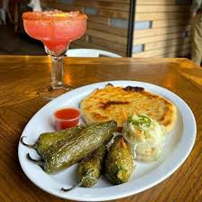
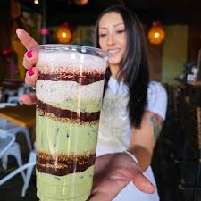
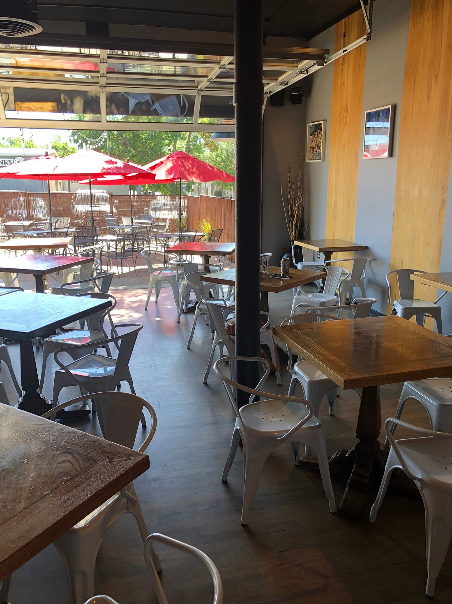
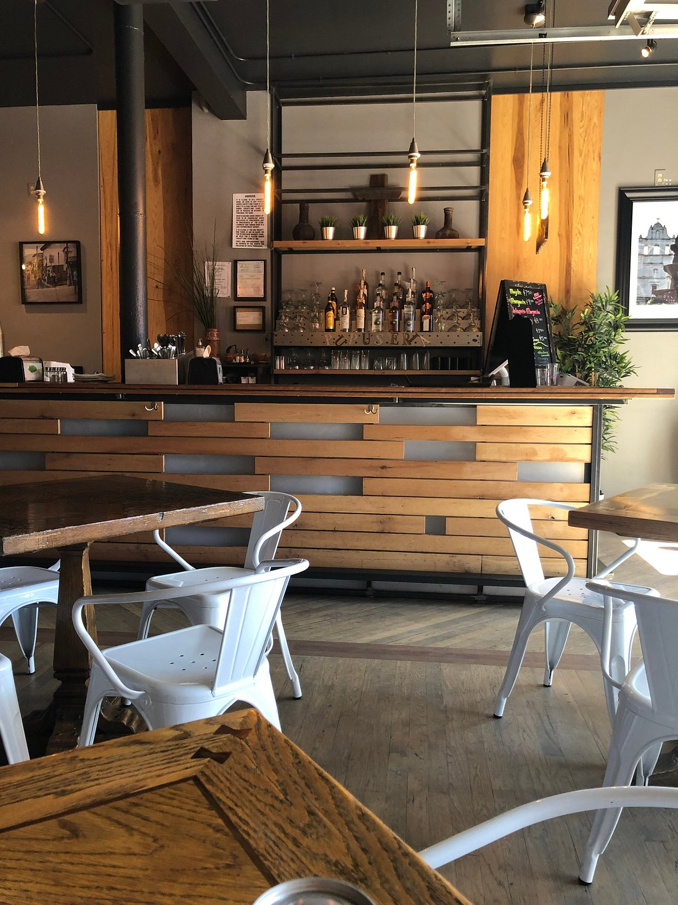
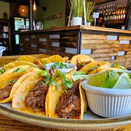
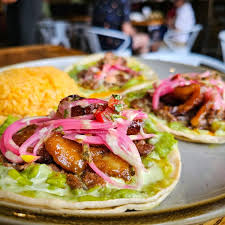

Photos
Our Gallery
A glimpse inside Monse's — the food, the space, the experience
From Our Kitchen
From hand-pressed pupusas to our vibrant mural and welcoming patio — this is Monse's. Click any photo to view it larger.










Come See It
In Person
Photos don't do it justice. Come experience Monse's for yourself.